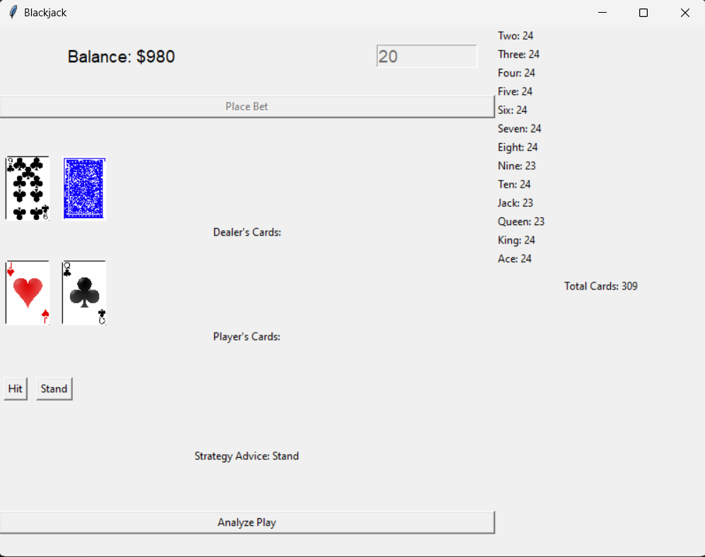

Beyond hit or stand
The simulator brings together a six-deck game, betting mechanics, strategy tables, and a running card tally. It is a desktop application built in Python, with SQLite storing events from play.
Logging hand states and actions makes the game available for analysis after a session. An experimental K-means view explores those recorded states alongside the playable interface.
View the application screens 2 views
A hand in progress and its completed result. Use the buttons or left and right arrow keys to switch views.